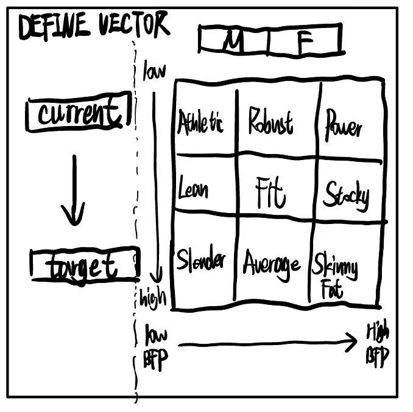
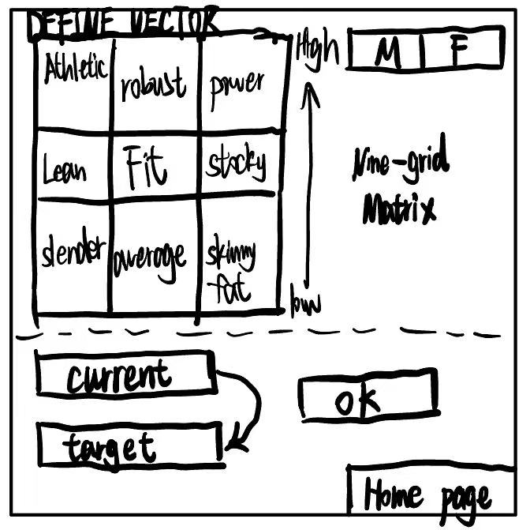
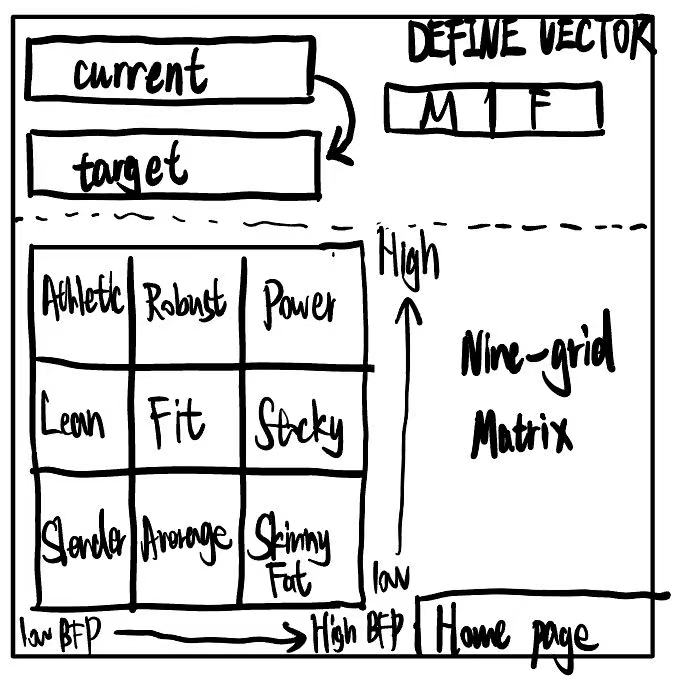
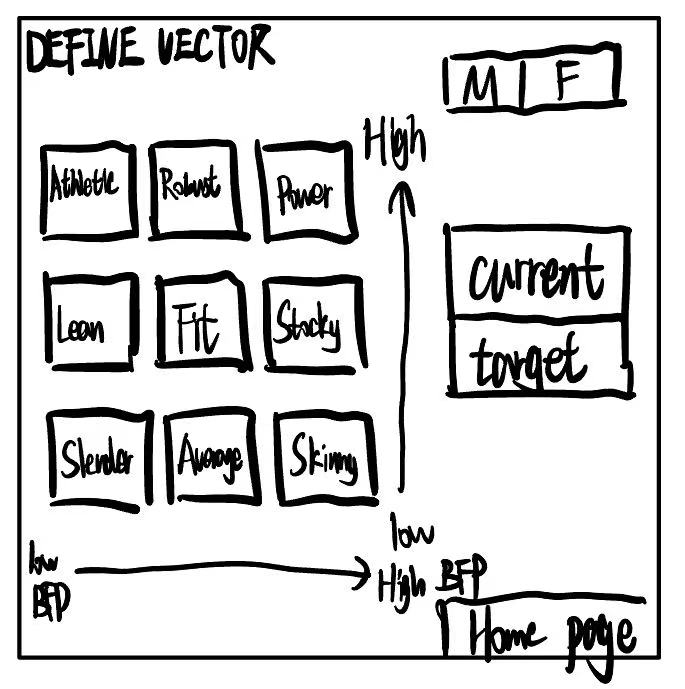
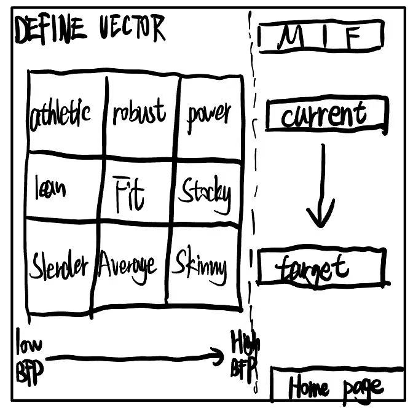
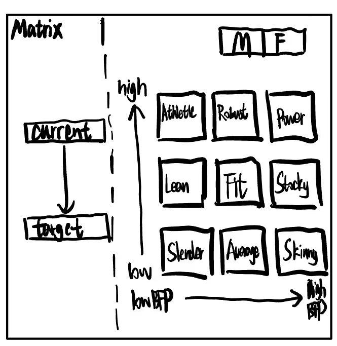
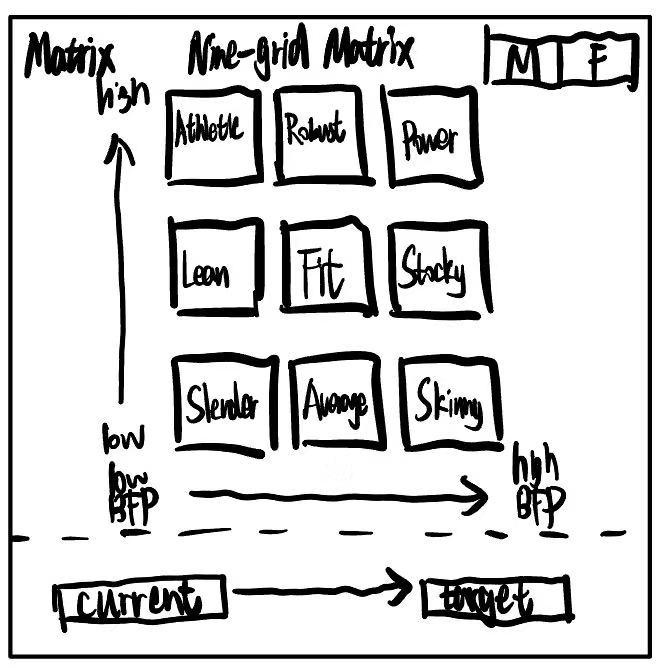

01. Motivation & Research
The Why
FITGRID (或称 FitMatrix) 旨在通过科学的数字化手段解决健身房资源分配不均与训练计划混乱的痛点。我们致力于将复杂的生理校准转化为直观、有趣的交互体验。
02. User Requirements
User Journey Map

Requirements List
- [Must-have 1]
- [Must-have 2]
- [Must-have 3]
Evidence of Life


03. Ideation & Alternatives
The “Crazy Eights”








Design Alternatives
[描述方案对比...]
Low-Fi Prototype
Open Figma
04. Technical Implementation
System Architecture
A diagram showing how your Web App handles data.

Individual Contributions
Specific contributions of each team member.
| Member Name | Focus Area | Specific Contributions (Code, UI, Content, Testing, etc.) |
|---|---|---|
| You (Student) | Development / Logic | [待填写具体贡献...] |
| Haijin Xia | [待填角色] | [待填写具体贡献...] |
| Yifan Xu | [待填角色] | [待填写具体贡献...] |
| Yiyang Lu | [待填角色] | [待填写具体贡献...] |
05. Evaluation & Reflection
Final Reflection
Social & Ethical
[待填写...]
AI Usage
[待填写...]